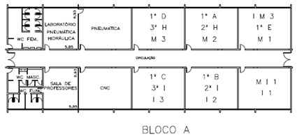
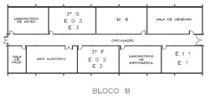

Guia das extensões ETEC
A Escola Técnica Estadual Polivalente de Americana está instalada numa área total de 48.203,50 m², possuindo 12.500 m² de área construída, dispostos em blocos, ligados entre sí por corredores cobertos.
O Bloco de Administração ocupa uma área de 1.752 m², disposta em dois níveis, sendo que o nível superior destina-se ao corpo Administrativo e Técnico pedagógico da Escola.
No piso inferior existe um hall de entrada com aproximadamente 1.080 m², destinado a exposição de trabalhos escolares e reuniões com a comunidade; uma sala de leitura e biblioteca com 290 m² e uma sala de Recursos Audio-visuais (RAV), com 70 m², usadas por todas as habilitações; auditório com 180 m², para realização de palestra e atividades culturais.
O Bloco A ocupa uma área de 864 m², que inicialmente foi destinado à habilitação de Mecânica.
Contém seis salas de aula. Neste bloco estão situados um laboratório de Fresa e Torno CNC, um Laboratório de Simulação Gráfica e um Laboratório de Célula de Manufatura Flexível. Há ainda, uma sala para Professores e Coordenação e Expressão, com dependências sanitárias conjugadas e sanitários externos para estudantes dos blocos A e B.

Ocupando uma área de 696 m², é destinado à Habilitação de Edificações.
Contém atualmente 4 salas de aula, 1 laboratório de informática, 3 salas especiais para Desenho.

Ocupa uma área de 840 m², é destinado ao Ensino Médio e Integrado.
Contém atualmente 4 salas de aula.

Área destinada aos laboratórios de informática, atualmente com 13, sendo um laboratório especifico para aulas de hardware e outro com macintosh destinado a aulas de comunicação visual.
Ocupa uma área de 810 m², inicialmente destinado às Habilitações de Administração e Secretariado. Contém 6 salas de aula, 2 laboratórios de informática e 2 salas de projeção.
Este bloco é composto ainda de uma sala de Professores e Coordenação, dependências sanitárias conjugadas e sanitários externos para alunos.

Ocupa uma área recém-construída de 8 (oito) salas de aulas, anteriormente Oficina de edificações.
Este bloco é destinado ao curso Têxtil, uma vez que o seu Laboratório se encontra nas proximidades da referida área.
Ocupa uma área de 2.304 m² dividida em cinco ambientes.
Ao lado, separadas por blocos de cimento, funciona a Oficina de Edificações, onde são realizadas aulas práticas de Construção Civil. Ao lado há a Oficina de Mecânica, com salas auxiliares no térreo e um mezanino de 216 m² com dois Laboratórios: de Instalações Elétricas e Pneumática.
Em frente à Oficina Mecânica foi instalado o Laboratório de Metrologia e em seguida a Oficina Têxtil.
Esta área é composta por 3 quadras poliesportivas, sendo uma coberta, um minicampo de futebol, vestiário masculino e feminino, uma mini quadra de vôlei e área de lazer com cobertura, sanitários e vestiários.